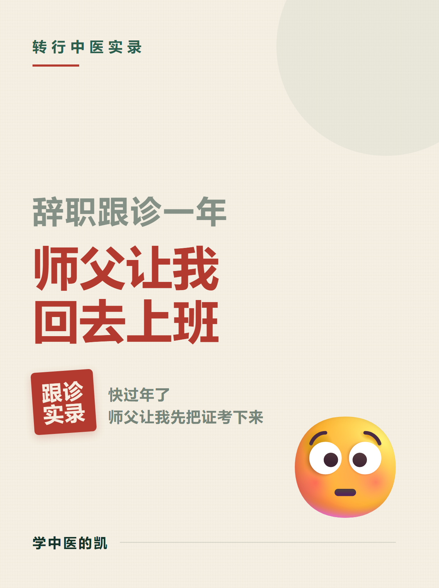
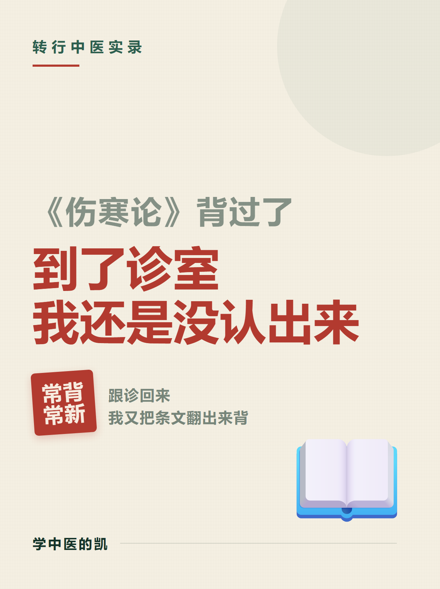
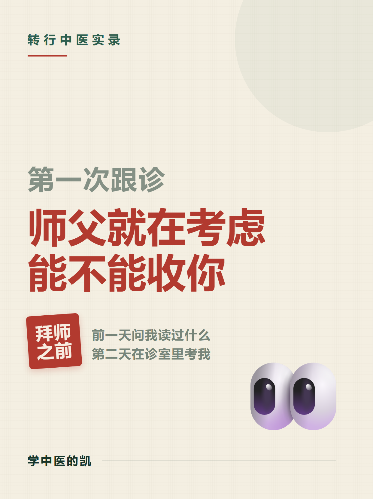

辞职跟诊一年，师父让我回去上班

下载封面 PNG
快过年了，那天师父看完最后一个病人，已经是中午了。我问他，过完年什么时候开始出诊？他问我明年怎么打算，我说，我想接着跟您。
他说：“别跟了你，回去上班吧，先把证考下来。”
我当时心里一下就沉下去了。脑子里就一个念头：师父是不是不想让我再跟了？😟
他又补了一句：“等你考完证，还可以回来。上班这段时间有啥不懂的，微信上问我。”
那一年，我辞了职，在医院旁边租了个房子。师父出诊我就去，他不出诊，我就在出租屋里看四大经典，背《伤寒论》条文。每天早上他到了要换衣服、泡茶，我就卡着那几分钟，把昨晚没想明白的条文拿去问他。要是病人来得早，我就留到第二天问。
我原来是想这么跟三年的。其实自己也知道，手里那点钱，撑不了三年。
我跟家里打电话说这事。我妈一听就说：“你好不容易遇到这么好的师父，你就跟嘛。家里砸锅卖铁也供你。”我爸在旁边就说了一个字：“对！”🥹
后来有一次跟师父通电话，他还问我钱够不够花，说缺钱就跟他说，他给我拿。再想起那句“别跟了你”，我才听出来，他也在替我算日子。
#转行学中医 #中医师承 #跟诊日常 #辞职学中医 #中医学习 #学中医的凯
《伤寒论》背过了，跟诊时我还是没认出来

下载封面 PNG
有次跟诊，我问师父：“四逆散，您是不是开得挺少的？”
他说：“我开得不少啊。”
我心想，我天天坐您旁边，怎么一次都没认出来？🤔 我又问，那四逆散证到底是什么样的？
师父说：“你跟着看吧。”
后来有一天，一位老人来看诊，穿得挺讲究。等他走了，师父才跟我说起他以前的情况。大夏天，他手脚冷得厉害，出门还得往脚底贴暖宝宝。
师父说：“他就是四逆散证。”
我当时就想，哦，原来如此！原来这就是我之前问的那个。要是师父不指给我看，我可能自己背一辈子，也想不明白这条在看诊时是什么样。
我第一遍背《伤寒论》，有些条文背得挺顺，但我没见过书里说的情况。后来跟诊碰上了，又只想得起来“哎，书上好像有这么一条”，具体怎么说已经忘了。
回去把书翻开，再背一遍。📖 有时候就读到那么几个字，脑子里突然想起白天坐在师父对面的那个人。
这就是我说的“常背常新”。那位大夏天还得贴暖宝宝的老人，我到现在还记得。
#伤寒论 #中医经典 #中医师承 #跟诊日常 #中医学习 #学中医的凯
第一次跟诊，师父就在考虑能不能收你

下载封面 PNG
第一次去诊室跟诊，我还不知道，师父已经在考我了。
我跟师父是通过一位师姐认识的。第一次见面，他问我：“看过哪些中医书？”
我就把自己读过的几本说了一遍。师父听完，说：“我明天坐诊，你来嘛。”
我问他几点去。他说医院八点上班，他自己七点左右就到了。我一想，总不能让师父先到，我再慢慢悠悠地过去吧。第二天早上五点，我就起来了。⏰
到了诊室，我坐在师父左边。病人一个接一个，我就在旁边听着、看着。
看着看着，师父突然转过头来问我：“你说，我为什么这么讲？”
他问的就是刚才跟病人说的那句话。正好跟我读过的《黄帝内经》有关，我就把自己知道的说了出来。师父“嗯”了一声，又接着看诊。
那一上午，师父就这么一边看诊，一边陆陆续续问了我好几个问题。有的我能答上来，有的就卡住了。😅
后来想想，他听我说看过那些书，总得看看我是不是真的读过，读进去多少。到了诊室，眼前就有病人，顺着刚才说的话、开的方子问一问，我知道多少，他也就清楚了。
那半天跟下来，师父决定收下我。看完诊已经是中午了，他叫我一起去吃饭，还把大师姐也叫来了。
我们师门里，新收了哪个徒弟，大师姐都要知道，以后有什么事也找她。就这样，我开始跟着师父学医了。
#中医师承 #中医拜师 #拜师学艺 #第一次跟诊 #转行学中医 #学中医的凯